|
Tools you will need:
Audacity
Citric Composer
Creating a singlechanneled BCSTM/BFSTM
To create a single channeled BCSTM/BFSTM, you need a music file, which is stereo.
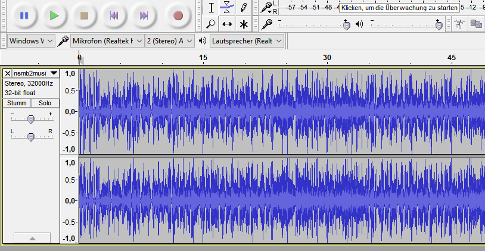
Export it as .wav and open Citric Composer.
Go to tools and click on Isabelle Sound Editor.
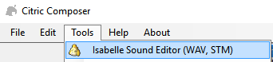
In the Sound Editor, go to Edit, and click on "Import File".
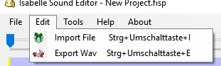
This is how it should looks now.
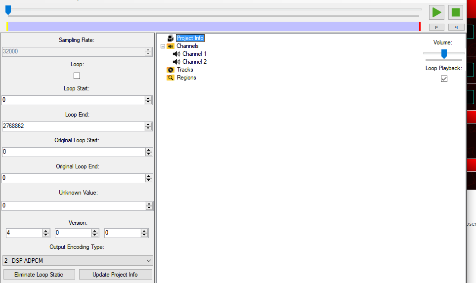
Here, you can set if the music should loop. If you want to loop, you have to enter the loop start and loop end in samples.
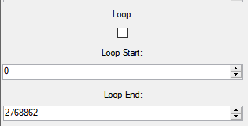
If that is too difficult for you, you can also define the loop start and loop end in the track.
The yellow one is the loop start, the red one the loop end.
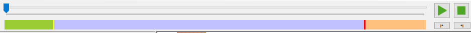
SMM3DS BCSTMS are on the version 2.3.1, so set the version to it.

SMMWiiU BFSTMS are on the version 4.0.0, so set the version to it.
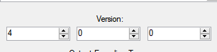
Select DSP-ADPCM for the Output Encoding Type.
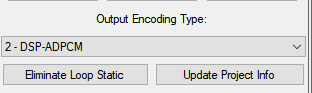
After you've done with the Info for the BCSTM/BFSTM, click on "Update Project Info".
You can also save this as a project file.
Now you have to export your BCSTM/BFSTM by going to "File" and click on "Export Binary".
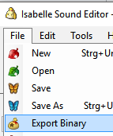
Save your file as "CTR Stream" if you want to save a 3DS BCSTM, "Cafe Stream" if you want to save a Wii U BFSTM, or NX Stream if you want to save a Switch BFSTM.
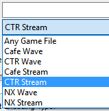
Don't forget to name the BCSTM/BFSTM correctly, so it can be patched.
Creating a multichanneled BCSTM/BFSTM
To make multichanneled BCSTMS/BFSTSMS, all you have to do is making the MONO channels. SMW and NSMBU music have 4 channels:
1st channel: Main theme left
2nd channel: Main theme right
3rd channel: Yoshi beat left
4th channel: Yoshi beat right
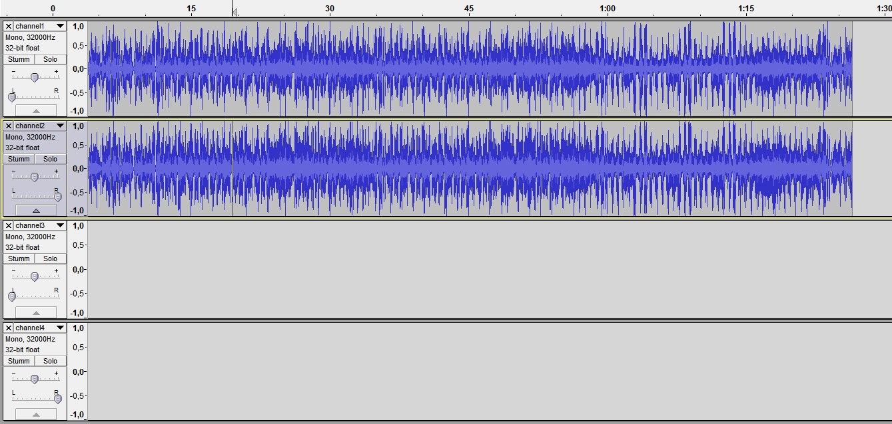
You can create mono channels by going to "Tracks" and click "Add new".
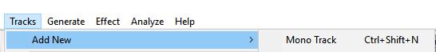
Note: If you don't want any yoshi beat, you can leave channel 3 and 4 blank. And don't forget to set the 1st and 3rd channel to left, and the 2nd and 4th to the right.
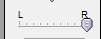
Before you export, go to the Audacity preferences,
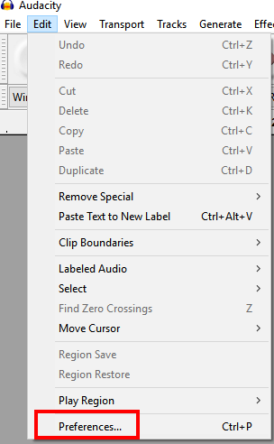
Go to "Import/Export", and enable this.
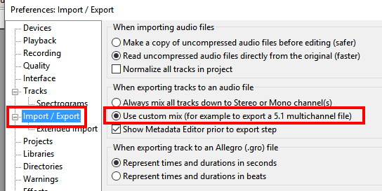
After you exported the .wav, you follow the Isabelle Sound Editor Part in the singlechanneled BCSTM/BFSTM tutorial.
Credits:
Gota7 for Citric Composer
Audacity Team for Audacity
_________________________
YouTube
|